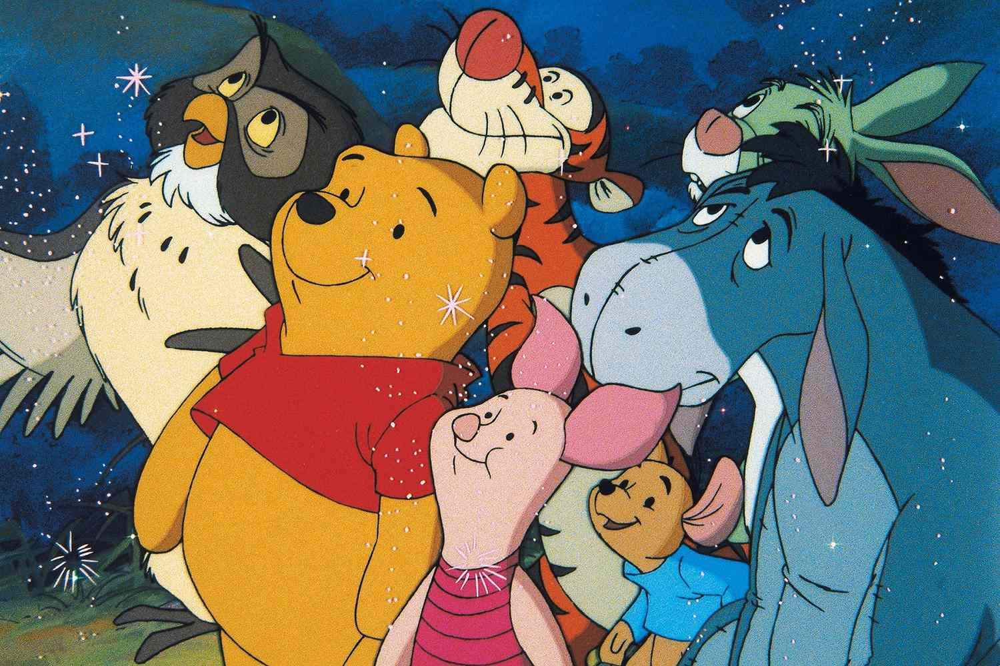
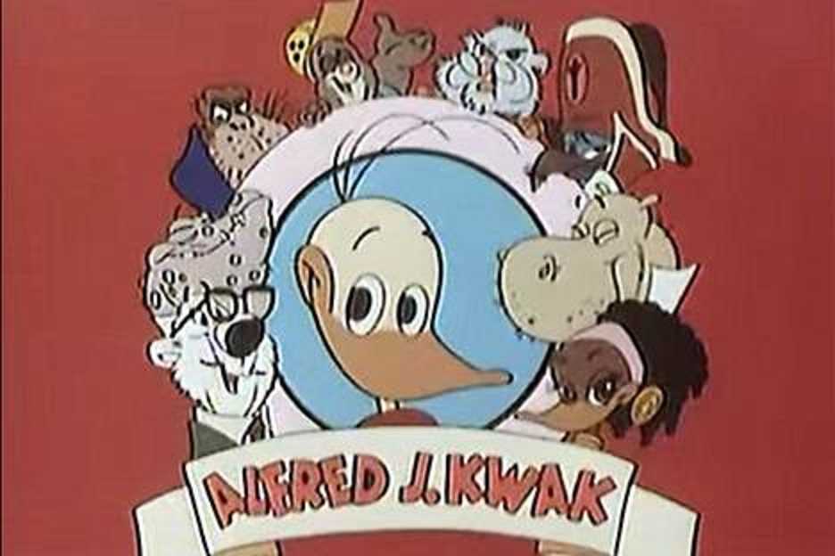
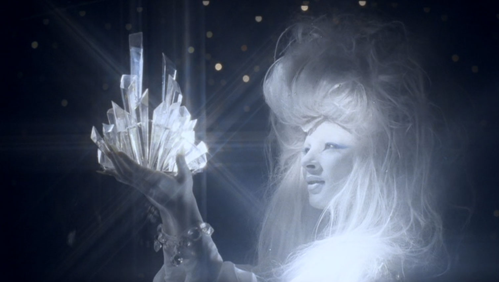
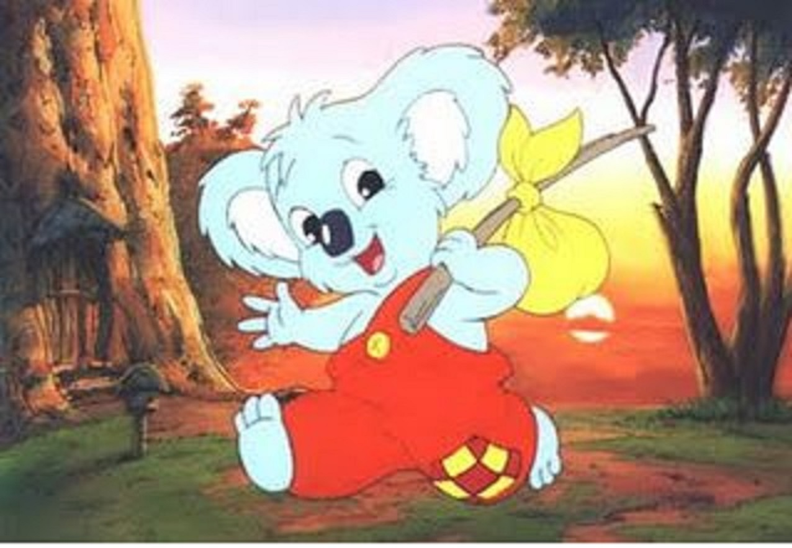

Nalle Puh on A.A. Milnen luoma lastenkirjojen hahmo, joka ensimmäisen kerran esiintyi kirjassa "Winnie the Pooh", julkaistu vuonna 1926. Nalle Puh on keltainen, lempeä ja ystävällinen karhu, joka asuu Sadan eekkerin metsässä ystäviensä kanssa.
Nalle Puhin tarinat sijoittuvat Sadan eekkerin metsään, ja ne kertovat Puhin seikkailuista ystäviensä, kuten Nasun, Tiikerin, Kenguin ja Ihaan kanssa. Tarinat ovat tunnettuja viisaudestaan ja ystävyyden teemoista. Puhin luonne on yksinkertainen ja lempeä, ja hänen suosionsa on säilynyt vuosien varrella eri sukupolvien keskuudessa.
Nalle Puhin tarinoista on tehty useita elokuvia ja televisiosarjoja. Yksi tunnetuimmista sovituksista on Disneyn animaatioelokuvat, jotka alkoivat vuonna 1966 elokuvalla "Nalle Puh ja hunajapuu". Tämän jälkeen on julkaistu useita muita Nalle Puh -elokuvia, kuten "Nalle Puh ja Ihaa", "Nalle Puh ja Tiikeri" ja "Nalle Puh ja Nasu". Näissä elokuvissa korostetaan ystävyyden merkitystä ja tarinoiden lempeää huumoria, mikä tekee niistä suosittuja perhe-elokuvia.
Nalle Puhin tarinat ovat siis säilyttäneet suosionsa vuosien varrella, ja ne ovat edelleen suosittuja lasten ja aikuisten keskuudessa ympäri maailmaa.

"Alfred J. Kwak" on alun perin hollantilainen animaatiosarja, joka on saavuttanut suosiota eri puolilla maailmaa, mukaan lukien Suomessa. Sarja on luotu Herman van Veenin toimesta ja sen ensiesitys tapahtui vuonna 1989.
Sarjan päähenkilö on nuori sorsa nimeltä Alfred J. Kwak, ja tarina seuraa hänen seikkailujaan värikkäässä eläinmaailmassa. Alfredin matka koostuu monista opettavaisista ja viihdyttävistä seikkailuista, joissa hän kohtaa erilaisia hahmoja ja ratkaisee erilaisia ongelmia.
"Alfred J. Kwak" on tunnettu siitä, että se käsittelee monia yhteiskunnallisia ja moraalisia teemoja lapsiystävällisellä tavalla. Sarja käsittelee muun muassa ystävyyttä, tasa-arvoa, ympäristönsuojelua ja rauhaa. Suomessa sarjaa on esitetty televisiossa suomeksi dubattuna, ja se on ollut suosittu lasten keskuudessa.
Vaikka sarja ei ole alun perin suomalainen, sen suosio Suomessa on ollut merkittävä, ja se on jäänyt monen sukupolven muistiin.

"Karhuveljeni Koda" (engl. "Brother Bear") on Disney-animaatioelokuva, joka julkaistiin vuonna 2003. Elokuva sijoittuu Pohjois-Amerikan intiaanien maailmaan ja se kertoo nuoresta intiaanipojasta nimeltä Kenai.
Kenai on impulsiivinen nuorukainen, joka kokee elämänsä suurimman muutoksen, kun hänen isoveljensä Sitka kuolee suojellessaan häntä karhulta. Kenai päättää kostaa veljensä kuoleman ja surmaa karhun. Kuitenkin henkimaailman voimat rankaisevat Kenaita muuttamalla hänet itse karhuksi. Kenai joutuu kokemaan maailman karhun näkökulmasta, oppien samalla ymmärtämään luontoa ja arvostamaan elämää.
Elokuvan edetessä Kenai kohtaa nuoren karhun nimeltä Koda, ja he alkavat matkata yhdessä kohti vuorta, jossa Kenai toivoo voivansa muuttua takaisin ihmiseksi. Matkansa aikana Kenai oppii tärkeitä elämänopetuksia ystävyydestä, anteeksiannosta ja luonnon kunnioittamisesta.
"Karhuveljeni Koda" on tunnettu koskettavasta tarinastaan ja kauniista animaatiostaan. Elokuva saavutti suosiota sekä lasten että aikuisten keskuudessa ja ansaitsi jopa Oscar-palkinnon parhaasta animaatioelokuvasta vuonna 2004.

Lumikuningatar -animaatioelokuva julkaistiin vuonna 1986 ja se on perustunut Hans Christian Andersenin samannimiseen satuun. Tämä suomalainen animaatio on ohjannut Pekka Lehtosaari ja se tuotettiin Marko Röhrin ja Sakari Kirjavaisen toimesta. Elokuva on suunnattu erityisesti lapsille, ja se kertoo tutusta sadusta lumikuningattaresta, joka jäätää maailman kylmällä sydämellään.
Lumikuningatar-animaatio on saanut kiitosta visuaalisesta toteutuksestaan ja suomalaisesta käsityöstään. Elokuva on tarjonnut katsojille oman tulkintansa klassisesta sadusta ja onnistunut vangitsemaan katsojiensa mielikuvituksen. Vaikka tämä elokuva ei ehkä ole yhtä tunnettu kuin joitakin muita animaatioita, se on osa suomalaista elokuvahistoriaa ja on jäänyt monille mieleen.

"Vili Vilperi" on suomalainen animaatiosarja, joka on suunnattu lapsille. Sarja perustuu Sami Toivosen kirjoittamaan ja Taina Tervosen kuvittamaan kirjasarjaan. "Vili Vilperi" seuraa iloista ja seikkailunhaluista Vilperi-nimistä olentoa, joka asuu Pikkukarhulassa yhdessä ystäviensä kanssa.
Sarjassa Vilperi ja hänen ystävänsä seikkailevat yhdessä erilaisissa tilanteissa ja oppivat samalla tärkeitä elämänopetuksia. "Vili Vilperi" on suunnattu erityisesti esikouluikäisille lapsille, ja sen värikäs ja iloinen animaatio sekä opettavaiset tarinat tekevät siitä suositun lastenohjelman Suomessa. Sarja on tuotettu suomeksi, ja sen suosio perustuu osittain sen kykyyn viihdyttää ja opettaa samanaikaisesti.
Nallepuh
Alfred-j-kwak
Karhuveljeni Koda
Lumikuningatar
vili-vilperi